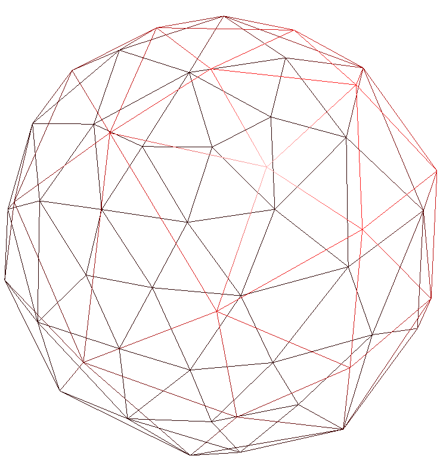
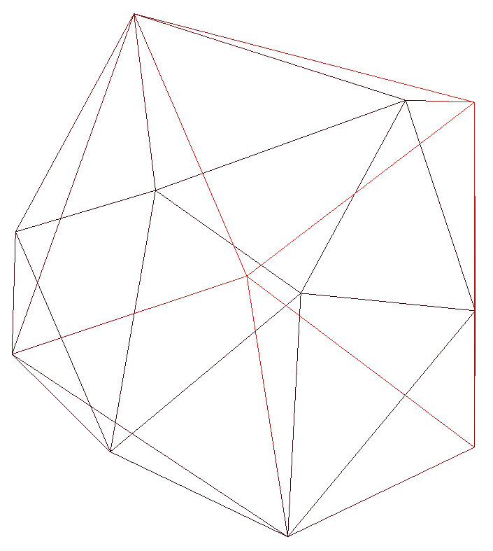

CS283 HW1: Mesh Simplification
Michael Driscoll
I. Mesh Viewer
My mesh viewer is based on the OpenGL viewer from Pixar's OpenSubdiv library. It provides rotation and scaling capability, and attempts to center the object automatically. I can enable drawing of face normals and/or vertex normals, wireframe or solid triangles, and automatic animation via a basic ``heads-up display'' developed by Pixar. The display also shows the current number of vertices and faces in the model.
II. Mesh Data Structure
I implemented a variation of the half-edge data structure. My data structure only differs in the Vertex class, which maintains a set of incident half-edges instead of a pointer to a single half-edge. This modification simplifies vertex-vertex and vertex-face adjacency lookups greatly. It also supports meshes in which a vertex borders more than two boundary edges.
class Vertex {
glm::mat4 Q;
glm::vec3 location;
std::set<Hedge*> edges;
};
class Hedge {
Face* face;
Hedge* next;
Hedge* pair;
Vertex* vert;
};
class Face {
Hedge* edge;
};- Parse the header and allocate memory for vertices, edges, and faces.
- Parse the vertex list, creating vertices and storing them in a vector indexed by their ID.
- Parse the edge list, creating the requisite half-edges and faces.
- Fix up half-edge pairs in two passes: first to populate a temporary mapping from vertex-vertex pairs to half-edges, and second to extract and set the paired half-edge from the map.
- Update Q matrices for all vertices, and insert all half-edges into a heap queue on their quadric error.
III. Edge Decimation Method
My edge-collapse method works as follows: a half-edge is identified as the edge to remove. Before mutating the mesh, I capture the original state in a VertexSplit object, which is pushed onto a stack of VertexSplits. Then, I designed the half-edge's vertex as the one to keep in the mesh; the other is marked for removal after its incident half-edges are transferred to the remaining vertex. I fix up pairs between the other two half-edges' pairs in the face. I also make sure that collapsed edges not longer appear in the set of incident edges maintained at each vertex. Next, if the target half-edge has a pair, then I repeat the process for the other face. Finally, I update the Q matrices for all vertices in the 1-neighborhood of the target vertex, and I recursively check and eliminate fins created by the newly-connected faces. All of these operations are local and occur in constant time, so my edge-collapse method is independent of model size.
This video shows a collapse that creates a fin, which is automatically removed. Smooth interpolation was only implemented for vertex splits, hence the choppiness during edge collapses.
IV. QEM and Progressive Meshes
My implementation of QEM follows directly from that described by Garland and Heckbert, with a few differences. I only implement edge collapses, not general pair collapses. Similarly, I place new vertices at edge midpoints if the Q matrix is not invertible, instead of finding the optimal location along the edge and/or choosing between the midpoint and endpoints.
I use a binomial heap from the Boost C++ Library to maintain a sorted list of edges to collapse. The heap provides an update method to resort individual vertices when their quadric error changes. Like any good heap implementation, access to the top element takes constant time and insertions and updates take log(n) time.
Like Hoppe, I use a linear interpolation to create a smooth transitions during vertex splits. This could be extended to edge collapses too, but I haven't implemented it. The linear scheme does have its drawbacks--when vertices first move from their starting location, a new face suddenly appears and instantly changes the surrounding vertex normals (and hence their shading). If it hasn't been tried before, an interesting project might be to designed a transition scheme that results in smooth normal adjustments.
V. Results - Sphere Model
The images below show the sphere model undergoing coarsening. The first image is the original mesh, and each successive image has half the vertices as the previous image.

{kind=link}
{kind=link}
{kind=link}
{kind=link}
{kind=link}
{kind=link}
- 
- 
VI. Results - Moomoo Model
The images below show the performance of my algorithm on a more-complicated shape than the sphere. As before, the first image is the original mesh, and each successive image has half the vertices as the previous image.
VII. Source Code
My code is available for download at github.com/mbdriscoll/cs283. It was developed using Boost 1.52.0, GLM 0.9.3, Mac OS 10.8.2, and Clang 4.1. A binary built on the same system is available here. It can be used with:
$ ./viewer path/to/model.off